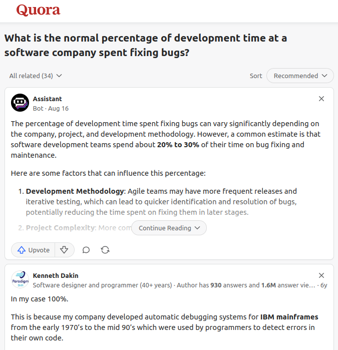
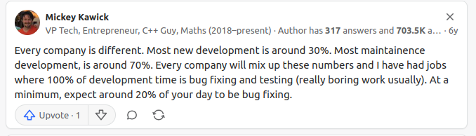

CMSC216 Exit Survey Results
Table of Contents
Summary Statistics for Multiple Choice Questions


Freeform Feedback
Frequent Items in Freeform Feedback
| Count | Comment |
|---|---|
| Overall | |
| 25 | The course was very organized / structured |
| 81 | Enjoyed it / little to improve on / "Banger course" |
| Exams | |
| 4 | Liked having open resource exams |
| Projects | |
| 8 | Difficulty of projects incresed markedly over semester |
| 30 | "Puzzlebin was deathly" / "Puzzlebin was devil's spawn" "Nightmare" |
| 16 | Projects too time-consuming |
| 23 | Figuring out what to do on projects was taxing / instructions vague |
| 3 | Sunday 11:59pm deadlines please |
| 4 | Project videos helpful |
| 12 | P4 was disorganized |
| 18 | P3 was (too) hard |
| Labs/HWs | |
| 5 | Labs + HWs were out of sync with lecture |
| Other | |
| 1 | Bonus Engagement Point system too complex / needs better explanation |
| 5 | Too many questions in lecture, slows down the flow |
| 2 | Have some required attendance element in Discussion like quizzes |
| 1 | Want to know how many Engagement Points I hae |
| 3 | Need more help at the beginning with environment setup |
Props to Staff Members
A number of staff members were individually thanked by students in their free-form feedback for help during the semester.
| Member | Thank-yous |
|---|---|
| Adam | 4 |
| Aidan | 1 |
| Alex | 4 |
| CJ | 7 |
| Clara | 3 |
| Cunyang | 1 |
| Eckart | 5 |
| Ethan | 1 |
| Gavin | 12 |
| Haowen | 1 |
| Iris | 1 |
| Jihyo | 3 |
| Lannie | 1 |
| Luis | 4 |
| Macy | 2 |
| Rohan | 2 |
| Saloni | 4 |
| All Tas | 10 |
Notable Freeform Responses
Student comments are given in plain face.
Instructor responses are italicized.
Projects
- The one project that I did not enjoy and found the most difficult was Project 3. Additionally, I was being a bit cocky which resulted in incomplete projects, which is completely my fault. Lesson learned!
- Puzzlebin took a part of my soul that I'll never get back, but otherwise the projects were super cool!
- Puzzlebin was a whole Fortnite event with how hard it was for everyone, but keep it that way so future students taking the course can experience it.
Many folks responding took the time to reminisce about the gauntlet that is assembly programming and debugging. It may be that I am simply perpetuating the pain inflicted on me in a bygone era, SSH-ing into a server until 2am and attempting to crack the mysteries of an assembly binary bomb via GDB. While this is not a skill I've oft employed since then, I did benefit from the experience as it taught me one doesn't have to fully understand a system to make some forward progress in it. I've also never been afraid to fire up a debugger since then.
- Project 5 took too much time and there wasn't enough time. It should've been released before thanksgiving break.
I've released projects prior to Thanksgiving before and gotten equal complaints about how I was forcing students to work on their project during a holiday. There is no winning on this account. I'm sorry that you would have preferred it that way rather than the post-holiday release.
- Although the projects were the most time consuming part of the course, I think they were the most informative.
That is my intent so I'm glad it worked for you.
- I feel like if projects focused on just the key principles rather than going above and beyond on the depth of material, it would be equally effective.
I'd need more detail to act upon such a suggestion. For example, one could have students just write some
fork() / exec() / wait()lines in amain(). I provided examples of this in lecture and had lab exercises which amounted to this style. But a Project is something that applies course topics in a practical and useful setting. That means there will be surrounding infrastructure such as was the case in P4. If you see some portions of the project that could be excised there or on other projects while retaining their use of core techniques and usefulness, please email me<prof@umd.edu>to discuss. This is an excellent exercise: what can be removed / re-designed / improved. You might find on trying it is hard to reduce the size of projects without sacrificing something. The size of software will also be constrained by the inherent complexity of the problems it addresses. Reasonable sized problems require some girth to the software.
- Another thing is that the projects are fairly lengthy and I wished they were a tad bit shorter. It may just be me being terrible at managing my time but I still feel that even if I managed my time properly the projects would still feel very lengthy and take up a good amount of time during my day just to finish parts of the project.
- I think while the projects were informative, they were extremely time consuming and a lot longer than projects that a lot of my peers and I have done in the past.
Time spent on projects is time spent practicing our craft. If you want to learn to build things, then practice building things. Building real software is no easy task and we built some approximations of real software this semester. Be proud of that as it will prepare you for the wild.
- You have the hardest projects in my life, like are you torturing us with these joints.
If you want the projects to seem easier, take CMSC 412 and build an operating system. I expect 216 projects will seem like a vacation after that.
- The majority of the time, I would spend 1-2 hours just staring at the template of the project, not knowing how to even start the project. This probably wouldn't have happened if I watched the project overview videos, but oh well.
I also find starting to be hard. Students in the past have reiterated that the intro videos help to break the ice. I'm sorry you didn't have a chance to use them as such. Look for ways to reduce that starting activation energy as if you are recognizing that pattern in yourself now, you'll have several years to learn how to overcome it before hitting the job market.
Absolutely no disrespect, but whoever wrote the documentation for the projects had an uncanny and unique ability to write in TONS of detail and yet remain extremely vague.
Again, I mean no disrespect, but somehow the documentation for these projects was uniquely worthless. I have yet to have a coding project at UMD that made me feel this way. Normally, I had an immediately good grasp comprehensively on what a project was meant to do and what concepts it encouraged to be applied, giving a good idea on how the functions would interact. But in this class, really bad writing in my opinion.
Kauffman, if you are reading this and you are the one who wrote the documentation; I am sorry. I mean no disrespect. I never really asked questions but you seem to be a very generous man, a knowledgeable professor and have the respect of your students. But based on my personal and biased experience; I humbly think you should hire someone to write the documentation for the projects for you.
Thanks for your commentary. I'll admit some bias as well: I laugh when 2nd year computer science students are critical of Project specification that I write. Not because the specs are perfect or even that good: I know they are filled with errors, typos, inconsistencies, and other warts. Rather, I laugh with this kind of commentary as there's nothing to do with it. There isn't a single concrete suggestion in your feedback of what should actually change. It amounts to "do better". If you have some specifics in mind, lay it on me at
<profk@umd.edu>. I'd encourage you to try. It will force you to consider "how would I do it differently?" and move away from the vague critique to the specific critique and perhaps ultimately to construction and creation. Concrete feedback would be like the following suggestion from a student:"It would be cool if the information for projects was more consistently split across class website and function comments. Every so often a crucial detail was on the class website, which took a while to find since all the other needed information is in the comments."
While it didn't give a specific instance, it at least gives me direction to look between the documentation comments in some projects and compare them to the implementation details. The improvement could be a matter of moving information between the doc comments and spec or leaving a note to remind to look at the more comprehensive implementation details described in the spec.
It may be that past projects were easy for you to understand because you were already familiar with most of what was involved. Unless things were quite odd, you've never written a Ranked Choice Voting calculation, embedded clock display, testing framework, or memory allocator before. You should expect that it's harder to mentally reason about those things which makes it much harder to code. But, with that experience in hand, you'll be in better shape to handle yet more complex software. Other complex skills are similar: writing, musicianship, sport, etc., they all seem opaque and extremely hard to grasp when starting but with steady practice become transparent and manageable. So it goes for computing and trust me when I assert that you're just getting started.
Exams
- I also really wish there was a topic list for the exams because they would really help students see what to study for exams especially because there's only two exams each with a lot of content so having a topic list would just make it feel less stressful while studying.
- You knew going into the exam after completing the project beforehand that you had the skills to come out with a decent grade just because the projects would teach you 80% of the topics covered on the exam.
My advice to students when preparing for exams is to finish the projects then perhaps review them leading into the exam. A typical "topic list" is a set of bullet items that students search for in a browser or notes, write down a quick summary, and therefore fool themselves into understanding. Exams ask you to apply the things we discuss in class and that's usually done in projects, labs, and HWs. That's why I don't provide a "topic list".
- I have been baffled at the discrepancy between the real [exam] and the practice resources.
If you like, I can sit down with you and show you analogs of each real exam problem and where practice material appeared for it in lecture, lab, HW, and projects. In some cases, one might need to combine things learned in several spots to solve an exam problem which is why having a good grasp on those practice materials is important. I admit, students accustomed to seeing the same questions on the real exam as appeared on practice exams were likely disappointed, but you're very unlikely to code course projects in an actual job so my expectation is that you learn to adapt what you know to new situations.
- course is kinda hard, most people did awful on the first midterm.
The Exam 1 median score was 55 / 70 = 78%, a C+ grade. Exam 2 had a median of 59 / 70 = 84%, a B grade and the Final exam had a 79 / 100 = 79% median, C+. These are normal for my runs of this course historically.
- Upping the practice test would be helpful becuase still felt like practice tests did not match the exam as exam was much more difficult and i felt really unprepared.
- Wished the practice test was more like the real tests.
I can do that. Based on past student feedback, we added a second practice exam page posted online too complement the one discussed in lecture. I can modify the problems on both to increase the difficulty somewhat if folks think this would set a better expectation for the exams.
- More Exams: 3 exams instead of 2.
Several students commented in this way. I'll consider it but there is a great difficulty with this if students want a review period (e.g. a lecture devoted to a practice exam). That means an exam cycle takes a full week so a third exam would likely mean eliminating a major topic in the course and require considerable re-organization. At my prior university, the equivalent to CMSC 216 was taught as a MWF 50-min course and so it was easier to do 3 exams and a final. However, with the 75-min convention at UMD, something has to go: a major course topic, review lectures, or a 3rd exam. I opted for the latter as it seemed the most favorable tradeoff.
- I think that the course policies were slightly unreasonable as most professors allow students to access past exams. Past exams are a very helpful in studying and they help students learn.
I can understand giving past exams which involve multiple choice questions, writing simple functions of 15 lines or less, or similar shallow / easy-to-construct questions. This has risks to it as well, but since generating those kinds of questions is less difficult, giving all of them away is tractable. I've also noticed that instructors that do so often don't teach the same things from one semester to the next so students complain that what was on past exams didn't prepare them for the present offering of a course.
As you may have noticed, the exam questions I give are dense and quite challenging to construct. They are meant to reflect specific topics we covered in this run of the course and I ensure that topics that appear on exams are scaffolded by appearing on assignments during the semester (projects, labs, HWs). Students that complete and own their assignments report that they feel well-prepared for the exams.
All of that makes me disinclined to give away past exams: they may not reflect what's covered in the course now, there is already ample material to study on, and it makes my job much harder as I cannot re-use any question I've given away publicly. I understand your concern as I've heard it before, but your argument is not enough to sway me.
Discussions
- I will take responsibility for being lazy and skipping some discussions, however I know if I had gone I would have benefited much more.
Good show. The best educators can do is to provide opportunities to learn, possibly with incentives, and hope that students take those opportunities. No one can force you to do something. If you found in retrospect that a particular activity would have been beneficial, you're reflecting which is great. Resolve to take advantage of those opportunities if they come up again.
- I felt like discussions would just be better online, I think because there is no graded work like a paper assignment or a paper quiz, I lost the incentive to go. If we had discussion online I would tune into them instead of walking all the way from Prince Frederick to CSI just to go over a lab and homework I could complete in maybe 30 minutes or so elsewhere.
- I really liked the discussion sections and feel like you should work to promote active sessions because those were super helpful to me
- I felt the discussions were ultimately at times glorified office hours, and were useless to me when I didn't need help.
Folks will experience discussion sections and their value differently. That is fully expected and if students did not find attending to be helpful, they were free to spend that time on other things. For the record, discussions were there to support learning, particularly completion of Labs and at times Projects.
- I think that during discussion sections, it would be more beneficial to have one meeting per week dedicated to reviewing the content Prof K covered in the lecture, and the other one devoted to lab work and walkthroughs.
- It would be helpful if discussions also went a little bit over the homework. From my understanding, Mondays were dedicated to the first part of the lab and Tuesdays were for the second part, but after each part, there would be empty time until class ended. For example, covering the lab on Monday may take 30 minutes; touching on the homework in the next 20 minutes would help working through.
I'll consider that as TAs also indicated the bulk of the weekly Lab seemed to be coverable on Mondays leaving the Wednesday session light on content. Reviewing HWs and Lecture content are good options to complement the lab coverage.
- Videos should be posted sooner, most notable the discussion tutorials, they were really helpful but were posted a couple days late
- Some labs did not have videos associated with them which sometimes sucked (i mean yeah I should've went to my discussion but still).
Videos are popular with students but are extra work for staff. This is the first semester videos for discussions were provided. The most timely coverage is gotten by ATTENDING the session your registered for. Videos always came later if at all.
- Discussion could be changed to be some sort of handwritten practice/review for the week's content.
Some TAs indicated they might like to do some handwritten worksheets and such. Other TAs indicated that they much prefer to actually code. I'll consider this but there are a variety of issues associted with such a change: will worksheet be graded, how they will they be graded, how will students who miss discussion be given a chance to make up the credit, and so on.
Engagement
- Most people likely got EPs through Piazza and moreso through asking questions in lecture, but I am very introverted so I couldn't really bring myself to ask or answer anything in front of 100+ people, and the few times I tried I was never called on because of where I was sitting. I can't think of a replacement/way to rectify this, more just bringing awareness to it in case it'll be used for a revision of the system.
- The only thing I would suggest is maybe having engagement points for discussion sections as well.
- more opportunities for engagement points
I'll consider adding bonus engagement points to discussions. Last semester this was done but there were notable abuses by students and general confusion among TAs on how to handle it. One student indicated they participated 64 times across the semester despite there being only 30 discussion meetings. While extreme, lecture did not have this problem. We can probably resolve this with some training and discussion might be a good place for students who'd rather not speak in the large lecture to have a chance to engage.
- Something found could be improved was the way engagement points were calculated because after around 32 lecture participation points it doesn't benefit the person that much since you need so many more participation just for 1 more engagement point.
Correct. This logarithmic scale is expressly designed to ensure there is no motivation for students to dominate the lecture discussion.
- I have observed in the class that stupid questions get laughed at by everyone. So a lot of times, I just did not ask questions.
There were times that student questions generated humor, often due to an ill-timed question that had just been answered through a lecture example. However, I don't recall any authentically posed inquiries being "laughed at" and I'm sorry that you got this impression. I hope you still had a chance to get answers through other means such as after lecture or during office hours.
- An added benefit of the bonus points that I experienced was that I would zone out less frequently as I was constantly trying to prepare an answer for the next question he would ask.
Glad to hear that the bonus EP incentive helped you zone in. Mentally preparing questions while you listen is a powerful tool. It allows you to check your understanding as you go and prepares you for later parts of a presentation as you'll be wanting to know things that may be covered next. Every talk I go to now I take some notes but also write questions in those notes as we go. Keep doing that and you'll be well-versed at absorbing and retaining presentations.
Technical Matters
- I cannot stand VS-Code. It seems like every time I opened it, I was irritated by the incessant pop ups asking me to download an extension or plug-in. After the first project, I installed WSL and got to work with good old vim.
Amen. I've seen 3-4 iterations of the popular IDE (Eclipse in my youth, Atom, VS Code, some others) and they all just seemed to get in the way. Perhaps I've never worked on a project that really benefits from what these tools provide but their constant interference with just writing code always seemed like a terrible value proposition to me. We chose VS Code as our "endorsed" editor because it is reasonably easy to set up, has a shallow learning curve to get working, and supports a few plugins that allow for interactions with GRACE. If you found it worked better for you to use a different tooling, that's great: owning your own tools is part of this discipline. Vim is a fine editor, just not as extensible as Emacs :-P
- I just memorized your URL and wget the lab each week without having to even launch a browser. I know that other professors are extremely particular about using a very specific IDE or coding environment.
Tools are personal. As you evolve, your coding tools should fit your like a tailored suite. Folks forget that software is malleable and there is no reason you should adapt to it: it should be adaptable to your needs. There is value in some settings for having shared tooling but to dictate how you should do something robs you of the chance to find tools that fit you.
I'm glad that you started to learn some tricks that are helpful. This is a good path to pursue and you might augment it even further by tailoring your shell to make it even slicker:
# put in your $HOME/.bashrc
# retrieve something from the 216 web site
function kget() {
wget https://www.cs.umd.edu/~profk/216/$1
}
# usage in a shell
>> kget p1-code.zip
...
2025-01-09 15:41:37 (2.76 MB/s) - ‘p1-code.zip’ saved [62492/62492]
>> kget practice1A-SOLUTION.pdf
...
2025-01-09 15:45:05 (2.00 MB/s) - ‘practice1A-SOLUTION.pdf’ saved [114123/114123]
- I don't like how you have to authenticate to grace/sftp with duo twice every time, but I'm guessing that probably can't be changed
- Having to reconnect Grace and doing the duo two factor authentication multiple times in a day was annoying.
- And last but not least, here's an unpopular opinion… I think Grace is pretty awesome.
GRACE is a server and a huge benefit from interacting with it is that this teaches students about editing code that runs on different system than their personal machine. This is by far the most common element of feedback that graduated students relate: they learned to be comfortable logging into other machines and getting work done. GRACE is tedious as it requires 2-factor authentication and we may use another, more ergonomic system in the future. However, students should not doubt the skills they acquired working on remote systems will prove valuable in the future.
- Project 4 worked on my GRACE machine but failed some Gradescope tests due to user permissions. In addition, lab 12 doesn't pass the test in GRACE but works on Gradescope. This could be made more consistent in the future.
Since course staff have little control over GRACE, we have to live with its peculiarities which has proved painful over the last few semesters. It does not seem that we'll get any major changes to GRACE so we are likely to try something different in the future that provides students with more concordant behavior between where they write their code and Gradescope. Docker containers are a promising avenue for this which we are likely to try in the spring.
- Please don't use the hash value comparison to determine if I passed since I don't even know which one I got wrong. I often spent 1-2 hours on the quiz part just to figure out which question was wrong.
I can see brute forcing the QUIZ answers taking an hour but reading the questions, thinking about them, experimenting with the provided code, perhaps discussing with a colleague, and then formulating an answer should take less time. The quiz was meant to be somewhat more challenging by nature of the all-or-nothing implementation. There were already easy questions on the HW which indicate right/wrong immediately. Labs are supposed to be a bit more challenging and it sounds like they were for you. I hope that that actually meant you learned something from them.
Hard Lessons
- Overall, what I took away from this class is to succeed you have to do A LOT of outside studying/work which I didn't realize until late in the semester.
- There were points where we were expected to complete a hard project, lab assignment, homework assignment, and review for an upcoming exam all in the same week. This would lead to 15-17 hours of working on this class.
But you realized it and will be able to act accordingly in the future. College students aren't often told the definition of a Credit Hour: "A credit hour is an amount of work that reasonably approximates not less than one hour of classroom or direct faculty instruction and a minimum of two hours of out-of-class work each week for approximately 15 weeks for one semester (Source)." That means just for CMSC216, a 4-credit course, students should be spending at a minimum 8 hours per week OUTSIDE of course meetings working on assignments and studying course topics. Perhaps some folks can get away with less but lots of folks will exceed that minimum. Being a student is a full-time job. If you treat it as such, then you'll likely get a lot more out of your education. That's why it's also extremely hard for students to hold down other jobs or satisfy significant obligations and maintain a good academic record. Keep at it and ask for help when you need it.
- It feels like the offered office hours during those days were wasted, while the times where I was struggling most typically were the two days before the due dates which unfortunately landed on the weekends, which meant aside from piazza, I was sol. (I am not sure how this can be solved, since the schedule for things to be done is already fairly packed but I figured it could still be mentioned.)
Scheduling deadline is very difficult as with 550 students, any deadline will be agreeable to some and disagreeable to some. We rotated the deadlines a bit but I'm sorry that you got pinched.
- The tests and projects were hard, but overall, not being swamped with thousands of assignments helped to balance this class with other classes.
- I would spend all my time on projects and it destroyed my ability to focus and do work for other classes and ruined almost every singly weekend.
Folks will have varying experiences with how much time assignments take. If you feel like you spent a LOT of time on assignments, take that as an investment that will accumulate interest and make future work easier, perhaps opening up later weekends for enjoyment. Also, see my note above on the time commitment associated with a 4-credit course.
- The first time that I went to office hours, I had around 3 minutes of TA time in the span of 2 hours. To be fair, that was on project due date and there's not much you can do to change this.
- Office hours is very hectic
- Make office hours more spread out amongst TAs.
TAs had nobody to talk to when deadlines were far and too many to talk to when deadlines were close. There is not way around this in my experience. I'll try to get TAs to have more coverage of hours during the day but there is great advantage for staff when there is some overlap of staff office hours, especially near deadlines.
- But it was very disappointing when I would start my projects as soon as possible and my peers would start later then finsih before me. Im not sure why but I just suck at coding lol.
Consider your sample. You might be seeing a few folks that have quite a bit of prior experience in CS or specifically in the topics covered in this course. If this is your first time coding in any of the environments we covered, then you should expect to take longer than folks who already have some training. This would be the case if you were running with an experienced marathoner: they'll be faster. LOTS of students struggled in this course but that struggle is a sign of actual growth. Consider, then, that you grew more during the semester than those same colleagues. And for the record, EVERYONE sucks at coding: it is ridiculously hard and unnatural to humans.
- I felt that although the slides were informative, they lacked the syntax required to help me complete the labs/projects. Many times I found myself relying more on sites like geeksforgeeks for syntax because not all of the syntax was covered in the slides. I felt this was different than my previous cs classes where I could resort to the slides to learn everything needed to complete the projects/labs.
I'd like more specifics on "lacked the syntax required". Just for lecture, I provided about 8300 lines of example codes to complement what we did in lecture. While it's fine to get alternative perspectives, I'm continually amazed at the student attitude of "never mind this prof I've paid several thousand bucks to teach me and the textbook/slides/codepacks they've told me to read, I'm just going to google for this thing and trust the first link that pops up."
- I think there should be a better way to track your grade in this class instead of entering our scores and finding out ourselves using the grading calculator.
You want me have your up-to-date grade posted at all times. Sorry, but no. If we had a simpler scoring system that didn't have engagement, late submission, bonus credit, regrades, a sophisticated autograder system, and so forth, this would be easy to do. But, we have those things. So you have to punch some numbers into a web calculator. A calculator that I wrote for you.
- I have nothing else to add, but I will say one last time how much I truly hate assembly and I hope it is un-invented.
To "un-invent" assembly would be to un-invent CPUs. That's likely to have a deleterious effect on the availability of programming jobs. I saw a talk a while back where the speaker was railing about how obscene Assembly code is and how ridiculous it is that it still exists in this advanced age. It was very apparent that this person had never taken a computing systems course and didn't really understand how silly their argument seemed. What would you replace assembly with? Rust? Make me a processor that executes Rust natively and I'll get behind you. On trying, you'll find it's intractable and will settle for a CPU that has an assembly language.
- While difficult, and needing frequent help, I feel that all my struggle helped me in the end - I learned what I didn't know/what was wrong, and was able to improve myself throughout the course.
That is my goal for everyone in the course: well done!
- Overall, this generous course has taught me a lot of lessons (including not just materials, but also about time management and procrastination) with very little penalty.
The biggest lessons you'll get while a student are not in the classroom but are instead about yourself. Nosce te ipsum: know thyself.
- Just make sure to not mess up the recording audio next time hahaha :D
I'll check more diligently. I've used this system for a year without trouble and all I heard about this semester was the one day the mic cut out.
Misc
- In general I liked the course, even if it made me want to rip my hair out at certain moments (assembly project).
Don't rip your hair out. It makes those of us with little hair all the more frustrated.
- about the textbook, I recently used it to do some optimizing for the final project and I was surprise at how clearly the textbook explained optimizations. The problem is I didn't really use the textbook throughout the entire Course as I felt there wasn't really ever enough time, but I feel I would have benefited if I did.
Glad you liked the textbook. Some folks can't stand it but it is among the best CS textbooks I've ever encountered and I benefited greatly from reading it when it was in it's Alpha version while I was an undergraduate. These days we have a rich set of information, web sites, videos, etc. But textbooks are still my favorite: they don't have ads, you don't need to subscribe to them, they have infinite battery life, and most of them contain very good information. If you learn how to read books, you'll always have a wealth of reliable information available to you.
- i liked the course overall but i think the exams were pretty difficult and I would have preferred there to be less questions about fixing bugs
I'm attempting to prepare you for your likely future. (Source)


- It assumes we know so much from CMSC132 and 131 despite C being a completely new language which was super frustrating.
C is not completely new. In fact, Java borrowed heavily from C and C++ so much of the syntax should be familiar to those coming from Java. The expectation that you know things like variables, functions, parameters, conditionals, loops, is stated up front. I'm sorry it was frustrating for you but generally your courses will build on each other in sequence. That's the nature of a college curriculum.
- The culture of the class made it impossible to make friends because all the students acted like they knew everything and seemed to thrive on the idea of other people doing worse than them. There were only men and very few women and the environment was not good(this is not the fault of the professor though and it is a deeper issue with STEM courses).
This was not my experience this semester and I'm very sorry to hear it was yours. If you have observed specific things that gave you the impression that students were actively wishing for their peers to do poorly, mail me to discuss it further:
<profk@umd.edu>. I did not see nor hear reports of this and it is of great concern to me if this was a wide-spread sentiment.
- I wish this class had some type of GSS or an extra review space. I feel I utilized a lot of the resources given to me but still feel behind, maybe if there was a GSS that would help.
I don't know what a GSS is. Please mail me
<profk@umd.edu>to explain and I'll see what I can do.
- I feel like projects are what I learned the absolute most from. Especially when compared to preparing for and taking exams, completing projects offers a much higher return in terms of understanding computer systems, C, assembly, etc. Thus, I believe that this should be better reflected by the grade weights. Of course, I do not know if this is practically possible administratively. Perhaps there are certain exam weights imposed upon Kauffman by the department?
Instructors have broad authority to set up courses as they wish. It is my decision to weight projects and exams as indicated. Your argument is reasonable, that projects allow students to grow the most and therefore should be weighted more heavily. Unfortunately, projects can also be completed through means that do not lead to growth. I cannot observe students complete project through use of AI, copy off others, pay folks, and other means. While I catch some of these violations, I'm certain much of this goes undetected. Rather, I can watch folks take exams so that they are much more likely to be the sole work of the individual who turns it in. This is reflective of many real-world situations: you may get a little credit for practice and preparation, but the real acclaim comes from the performance, be it sport, art, business, etc. That performance usually reflects whether preparation was authentic or mocked. Exams are our performance.
- [The course was] very transparent and does well in reflecting effort.
That is our goal; glad you felt as much.
- C is my new favorite programming language.
Glad you like it. Keep in mind that such a statement is equivalent to a carpenter saying "the screwdriver is my favorite tool". Programming languages are tools. Make sure to collect several of them so that when faced with a task, you can select an appropriate tool for the job. I recommend paying special attention in CMSC330 as OCaml is an outstanding tool for many tasks where C falls short. I encourage you to pick up Python and some Scheme to round out your collection. And AWK; no one loves AWK enough.
- Don't be a Goomba
Forever sound advice.